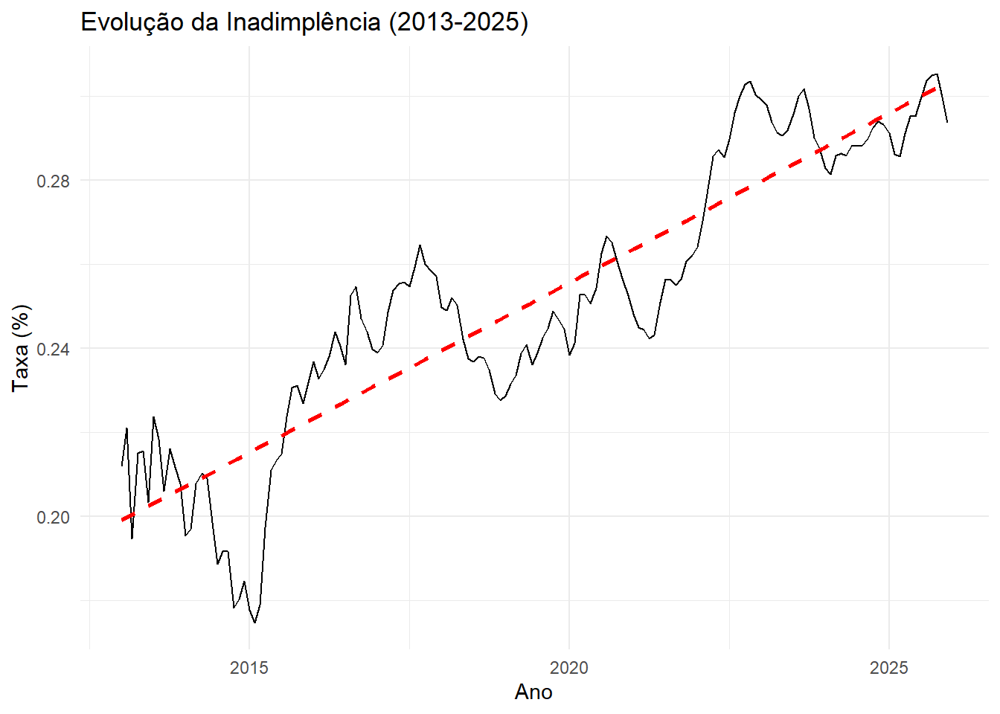
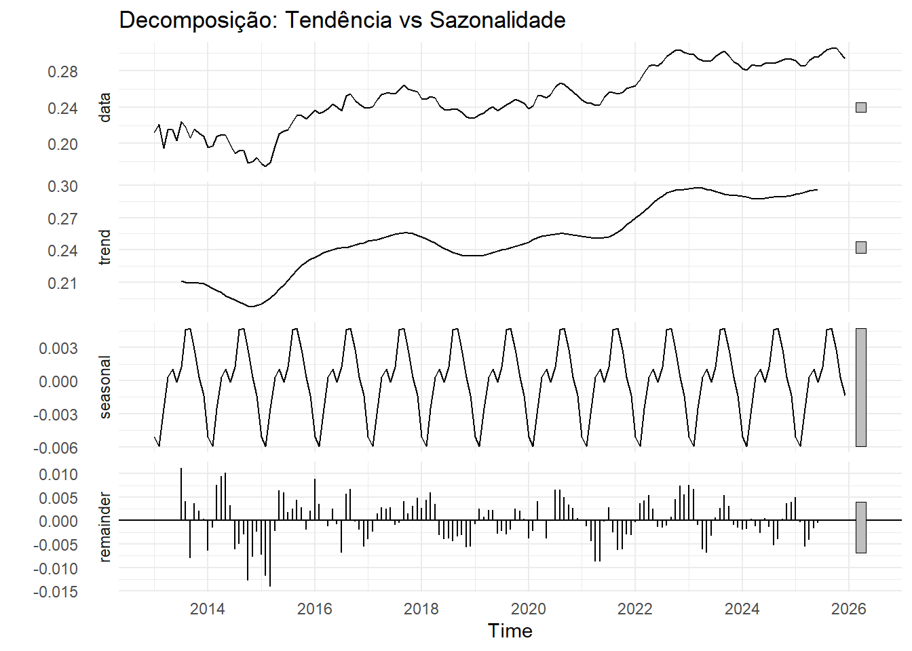
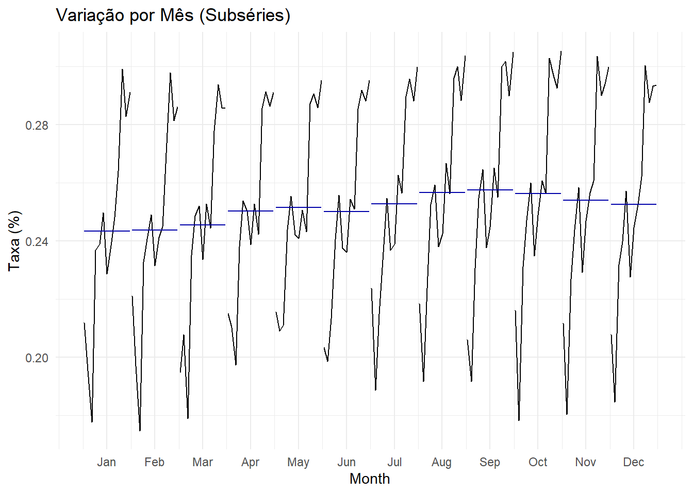
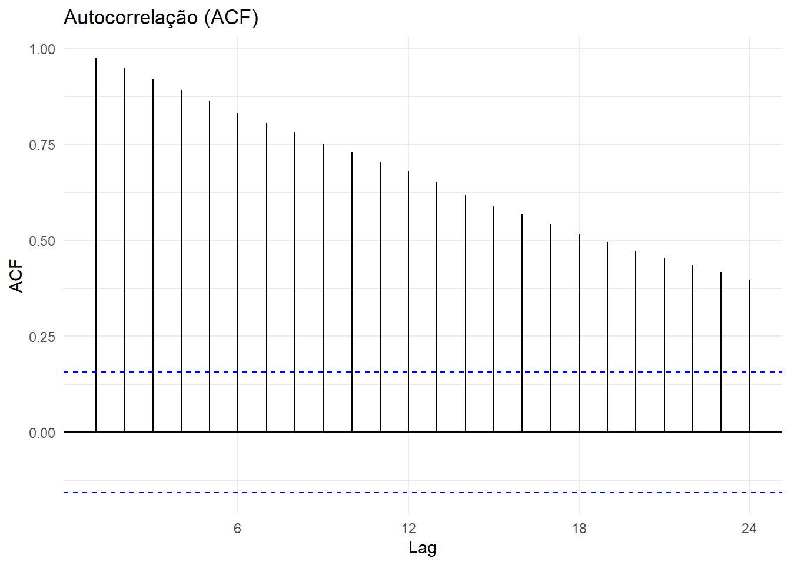
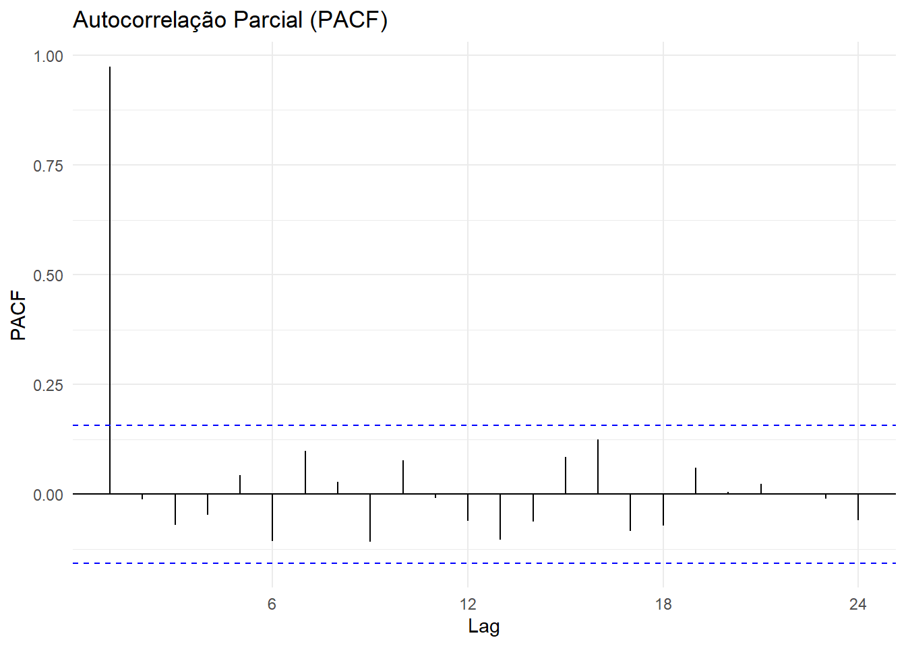
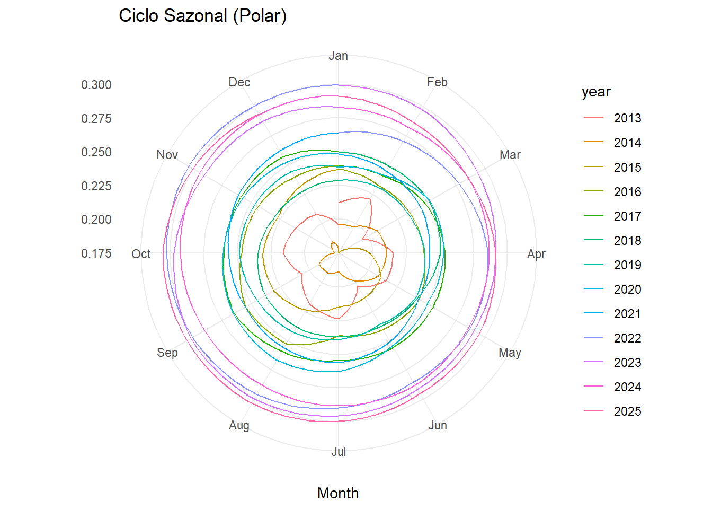
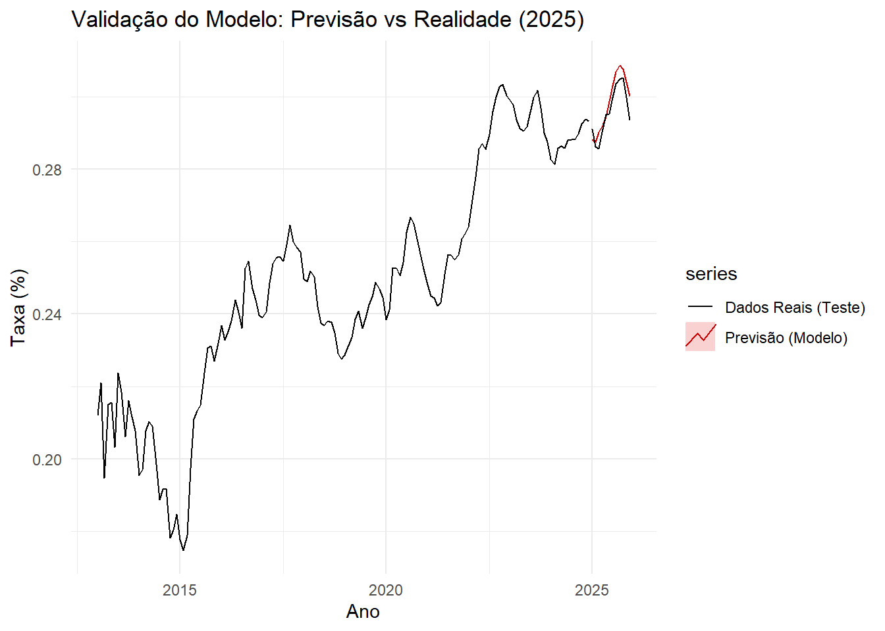
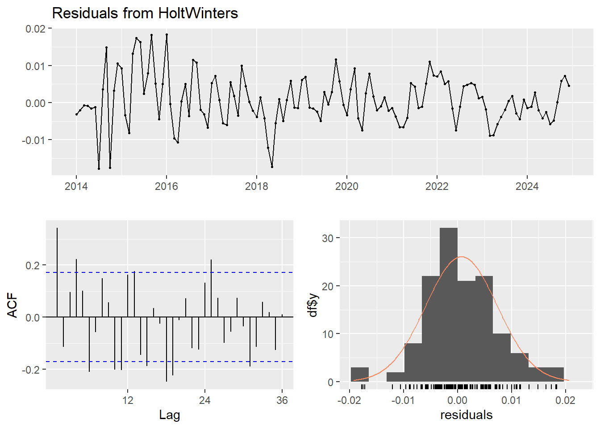
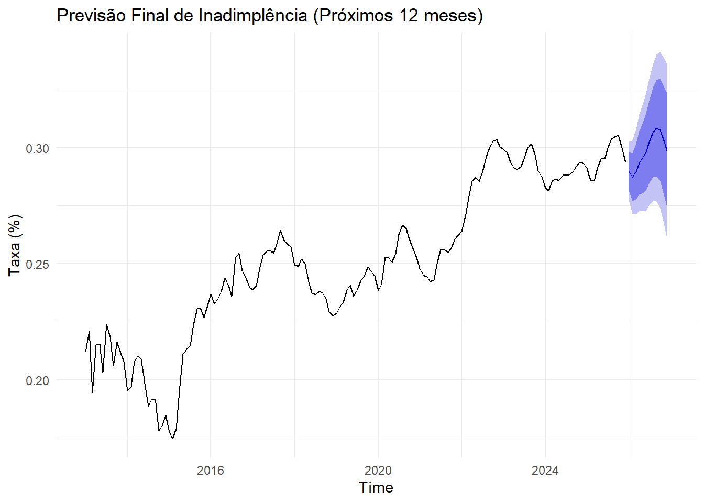

Análise e Previsão da Inadimplência do Consumidor
1. Introdução
A inadimplência é um indicador crucial da saúde financeira das famílias e do risco de crédito no país. Este trabalho analisa a série temporal da Pesquisa Nacional de Endividamento e Inadimplência do Consumidor (PEIC), apurada pela Confederação Nacional do Comércio (CNC).
O objetivo principal é examinar o comportamento histórico da taxa de famílias com contas em atraso entre 2013 e 2025 e desenvolver um modelo preditivo. Essa projeção visa antecipar cenários futuros, fornecendo subsídios para a tomada de decisão estratégica na concessão e renegociação de crédito.
2. Metodologia
A análise foi realizada utilizando a linguagem de programação R (ambiente RStudio). A metodologia adotada foi a de Séries Temporais, ideal para dados coletados sequencialmente.
Para a modelagem, optou-se pelo método de Suavização Exponencial de Holt-Winters (Aditivo). A escolha deste modelo justifica-se pelas características identificadas na análise descritiva dos dados: a presença de uma tendência de crescimento definida e um padrão de sazonalidade constante ao longo dos anos.
3. Análise Descritiva dos Dados
Para iniciar, analisamos o comportamento histórico da inadimplência nos últimos 12 anos. O objetivo foi identificar visualmente a tendência.
Ao analisar o gráfico, fica evidente que estamos lidando com uma série temporal com tendência de crescimento. A linha pontilhada vermelha mostra claramente que a inadimplência não é estática: ela saiu de um patamar próximo a 20% em 2013 e alcançou quase 30% em 2025.
3.1. Decomposição
Para entender o que impulsiona esses dados, aplicamos a técnica de decomposição. Isso nos permite separar o que é crescimento real (tendência) do que é apenas movimento repetitivo (sazonalidade).

Tendência: É a linha que mostra a direção real, ignorando os altos e baixos de cada mês.
Sazonalidade: Mostra um padrão de ‘ondas’ que se repete perfeitamente todo ano. Isso prova que a inadimplência tem meses certos para subir e descer, e esse comportamento é muito previsível.
Resíduos: É o que sobra, o que o modelo não conseguiu explicar pelo padrão normal. As barras maiores aparecem justamente em épocas de crise (como 2015 e 2020).
3.2. Sazonalidade
Com a sazonalidade investigamos se existe um padrão mensal fixo. O gráfico de subséries abaixo compara o desempenho de cada mês ao longo da década para confirmar ciclos repetitivos.

Este gráfico detalha como cada mês se comportou ao longo da última década. As linhas pretas dentro de cada mês mostram a evolução ano a ano.
As linhas azuis representam a média histórica de cada mês. Observando a altura dessas linhas, conseguimos identificar quais meses têm, em média, taxas mais altas ou mais baixas.
3.4. Correlogramas (ACF e PACF)
Para definir o modelo estatístico, analisamos a ‘memória’ da série. Os correlogramas indicam a dependência temporal e justificam a necessidade de um modelo robusto como o Holt-Winters.

A autocorrelação apresenta um decaimento muito lento. Isso é a assinatura clássica de uma série não estacionária com forte tendência. Significa que o dado de hoje é fortemente influenciado por todo o histórico passado.

Na autocorrelação parcial, vemos um pico altíssimo no primeiro lag e depois quase nada significativo. Isso indica que a informação mais relevante para prever o mês seguinte é o mês anterior.
3.5. Plot Polar
Para examinar a ciclicidade da inadimplência sob uma perspectiva anual comparativa, optou-se pela representação em coordenadas polares.

O círculo menor (vermelho) representa 2013, e a espiral vai crescendo para fora até chegar no círculo maior (rosa) de 2025. Ja o formato, que não é um círculo perfeito, ilustra as variações sazonais que distorcem a curva sempre nas mesmas direções.
4. Modelagem e Previsão
Antes de prever o futuro, testamos o modelo. Separamos o ano de 2025 para verificar se a ferramenta conseguiria acertar o que realmente aconteceu.
Para validar a capacidade preditiva, foi aplicado o modelo Holt-Winters nos dados de treino (2013-2024) e projetamos o ano de 2025. Divisão treino e teste, treino: Até Dez/2024 e teste: Jan/2025 em diante (para ver se o modelo acerta).

A linha vermelha, que representa a previsão feita pelo modelo para 2025, acompanha com alta fidelidade a linha preta (dados reais observados no mesmo período). O modelo previu corretamente que a inadimplência continuaria subindo em 2025, não subestimando o crescimento da dívida.
4.1. Calibragem do Modelo
O modelo Holt-Winters (Aditivo) foi ajustado automaticamente aos dados de treino. A análise dos parâmetros resultantes nos permite entender a dinâmica interna da série:
| Parametro | Valor | Significado |
|---|---|---|
| Alpha (Nível) | 0.7183 | Alta sensibilidade ao curto prazo |
| Beta (Tendência) | 0.0293 | Crescimento estável |
| Gamma (Sazonalidade) | 1.0000 | Sazonalidade altamente adaptável |
O valor elevado indica que o nível da série muda rapidamente. A inadimplência tem “memória curta”, sendo fortemente influenciada pelos dados mais recentes.
O valor baixo sugere que a inclinação da tendência é estável. O crescimento da inadimplência é constante e não sofre mudanças bruscas de direção.
O parâmetro máximo indica que o padrão sazonal é altamente adaptável, baseando-se no último ano observado para projetar os picos futuros.
4.2. Métricas de Desempenho
Para quantificar a precisão do modelo, analisamos os erros obtidos na base de teste (2025), comparando o que o modelo previu contra o que realmente aconteceu.
| Conjunto | RMSE | MAPE_Porcentagem |
|---|---|---|
| Treino (2013-2024) | 0.0067 | 2.15% |
| Teste (2025) | 0.0035 | 1.06% |
Erro Percentual Absoluto Médio: O modelo apresentou um erro de apenas 1,06% nos dados de teste. Isso significa que, se a taxa de inadimplência real fosse 30%, o modelo erraria por uma margem mínima.
Raiz do Erro Quadrático Médio: O valor de 0,0035 no teste indica que os desvios padrão dos resíduos são mínimos.
4.3. Diagnótico de Resíduos
Após confirmar a precisão dos números. O diagnóstico abaixo analisa os erros de previsão (resíduos) para confirmar se eles são puramente aleatórios, o que é a prova final de que o modelo extraiu todas as informações úteis da série temporal.
[1] "--- DIAGNÓSTICO DE RESÍDUOS (Ljung-Box) ---"
Ljung-Box test
data: Residuals from HoltWinters
Q* = 92.113, df = 24, p-value = 6.425e-10
Model df: 0. Total lags used: 24A análise visual indica que os resíduos se comportam de forma estável e o modelo apresenta alta capacidade preditiva (MAPE ~1%), embora testes estatísticos rigorosos sugiram leves correlações remanescentes, comuns em séries econômicas complexas.
5. Previsão Final
Com o modelo validado, projetamos o cenário para os próximos 12 meses, considerando os intervalos de confiança estatísticos.

O gráfico final apresenta a previsão gerada pelo modelo Holt-Winters para o próximo ano. A linha azul sólida representa a estimativa média, enquanto as faixas sombreadas indicam os intervalos de confiança (80% na faixa escura e 95% na faixa clara
6. Conclusão
A análise dos dados da PEIC entre 2013 e 2025 mostrou que a inadimplência no Brasil vem crescendo bastante: saiu de 20% e hoje está perto de 30%. Além de subir, ela segue um padrão que se repete todo ano (sazonalidade), sempre aumentando nos mesmos meses.
Para prever o futuro, usamos o modelo Holt-Winters. Ele funcionou muito bem, errando apenas 1% (MAPE) quando testamos com os dados de 2025.
Diante da alta previsibilidade dos picos sazonais (tipicamente no início do ano), recomenda-se que instituições financeiras e o varejo antecipem medidas de mitigação. Ações como campanhas de renegociação e educação financeira devem ser intensificadas estrategicamente nos meses de novembro e dezembro, atuando de forma preventiva antes que a curva atinja seu ápice sazonal previsto.